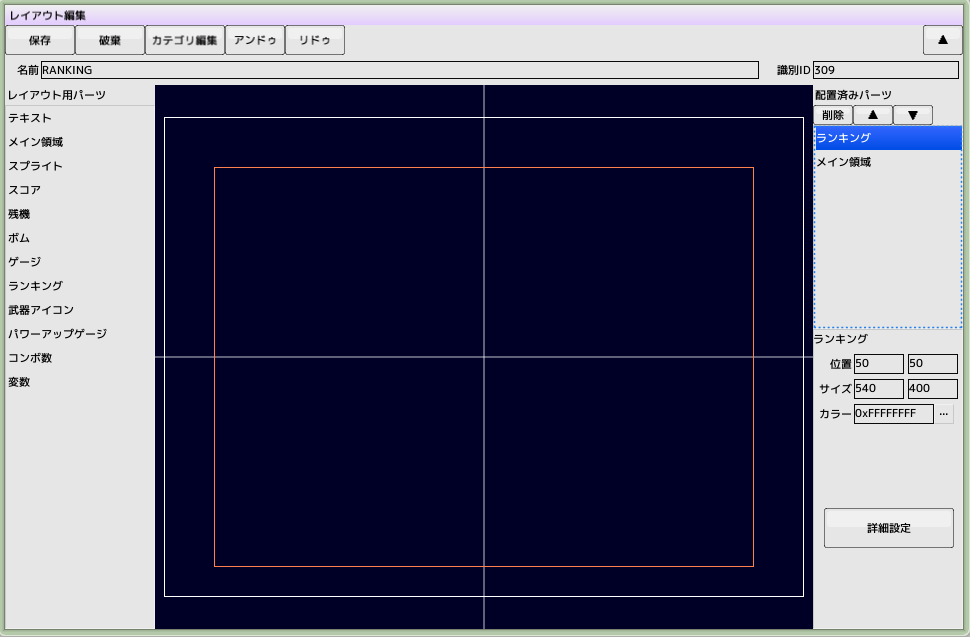
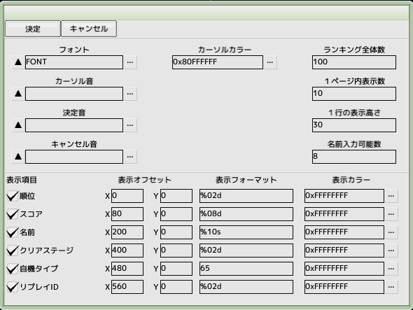
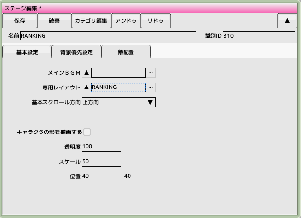
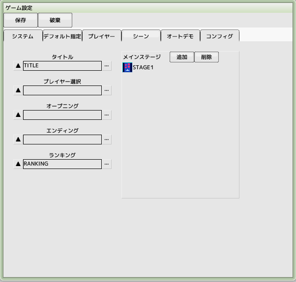

■元のページへ戻る
■元のページへ戻る

ランキング用のレイアウトを作成します
プロジェクトからレイアウトを新規作成し、名前を'RANKING'とします
メイン領域のサイズを目一杯まで広げます
レイアウトパーツの中からランキングを画面内でドラッグ＆ドロップします
配置済みパーツのランキングを一番上（高優先）に移動させます
位置とサイズを設定し、詳細設定へ移ります

ランキングの詳細設定
全てデフォルトのままで、フォントだけ指定します

ランキング用ステージの作成
プロジェクトからステージを新規作成し、名前を'RANKING'とします
専用レイアウトに先ほど作成した'RANKING'を設定します

ランキングのゲーム設定とテスト
ゲーム設定のシーンタブからランキングへ先ほどの'RANKING'を登録します
通しプレイテストを実行します
タイトル画面からCキーでランキング閲覧画面へ遷移します
Xキーでタイトルへ戻ります
通しプレイでハイスコアを記録すると名前入力シーンへ遷移します
その時リプレイが記録され、ランキング画面でZキーでリプレイ再生ができます
■ページ上部へ戻る